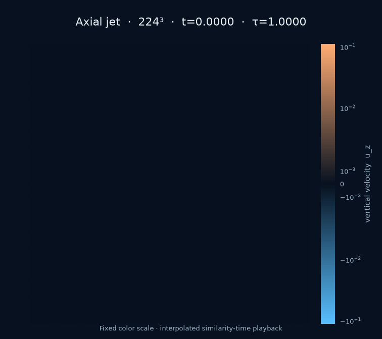
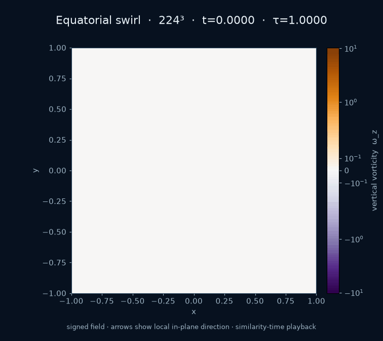
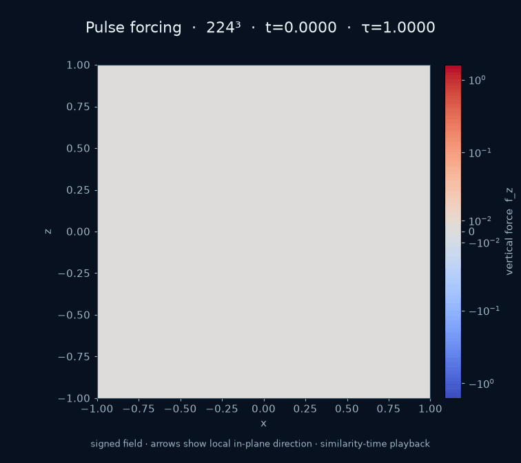

Best complete start-from-rest run
224³ from rest.
Zero velocity and zero force through t = 0.55; smooth forcing then drives the concentrating flow through t = 0.992.
- Peak speed
- —
- Peak vorticity
- —
- Smallest scale
- —
Loading run record…
Finite manufactured-solution experiment—not an independent proof.

Axial jet
Signed vertical velocity · x–z plane
GIF ↓

Perpendicular swirl
Signed vertical vorticity · x–y plane
GIF ↓

Pulse forcing
Signed force · x–z plane
GIF ↓